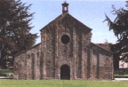

|
Presentazione
Con
la terza edizione de "La Pieve di Viguzzolo", studio dell’architetto
Pinuccia Rubini, che nasce dalla collaborazione tra il Comune e la Pro
Loco, abbiamo voluto stimolare l'attenzione di tutti verso un patrimonio
che in provincia di Alessandria incomincia ad essere curato come merita.
La nostra Pieve, infatti, costituisce, nell’ambito delle chiese pievane
a livello provinciale e regionale, un esempio di architettura romanica
di elevato interesse, soprattutto per la proporzione dei suoi spazi e
per il rigore formale dei suoi volumi. E’ tra le poche chiese del
Mille che hanno mantenuto sostanzialmente integra la propria struttura.
In seguito all’attuazione della nuova e pi� idonea sistemazione del
Parco della Pieve, � stato realizzato uno spazio verde di elevata qualit�
formale che contribuisce alla conservazione dell’edificio, ricrea
pure un ambiente che si colloca adeguatamente nel paesaggio circostante
e rievoca le antiche sistemazioni a verde degli edifici di culto, valorizzandone
la funzione storico-religiosa.
Ci auguriamo che questa pubblicazione valga a far riflettere i Viguzzolesi
su quanto � affidato alla loro responsabilit� civica, sintetizzando quel
sentimento di amore e curiosit�, che spinge a ricercare negli antichi
monumenti la testimonianza della tradizione storica e culturale di un
territorio, in cui i popoli possano ritrovare le loro pi� antiche radici.
Il Sindaco
Mario Marini
|
|
indice
presentazione
formazione
delle pievi
cenni
storici
descrizione architettonica

foto
di Ugo Pasini
|